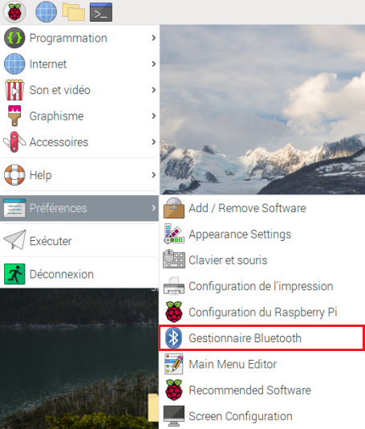
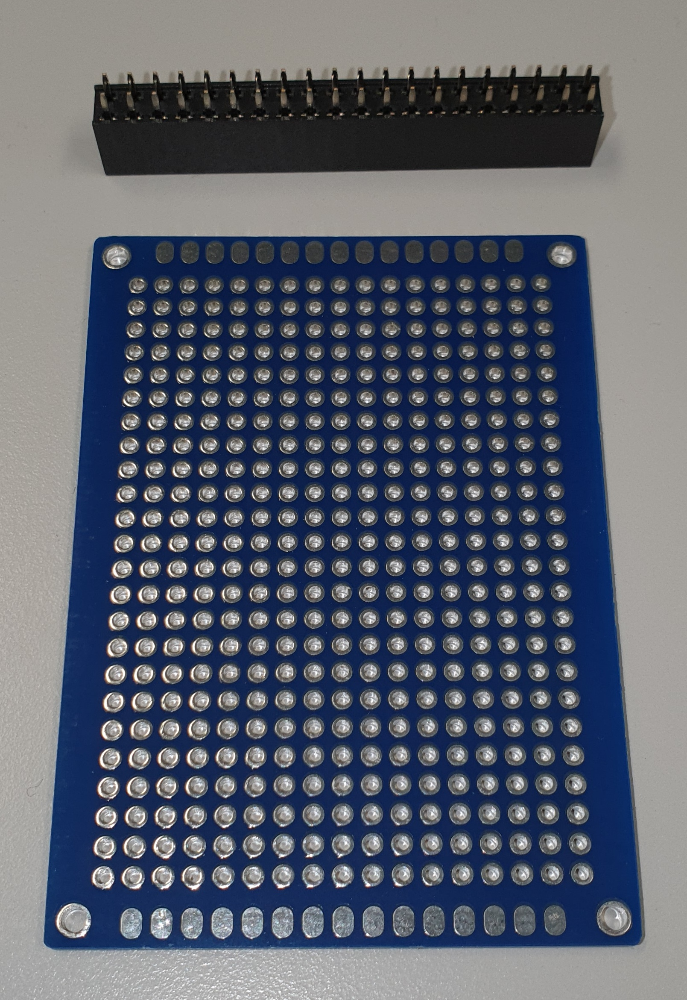
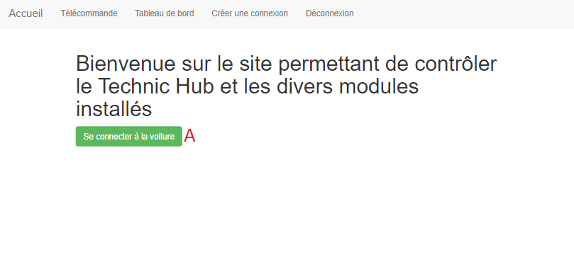

Voiture assistée est un projet d’étude portant sur les voitures autonomes et leur fonctionnement. Ce projet m’a été proposé par M. Bonvin étant donné que la première ébauche du cahier des charges comportait en une simulation de voiture autonome, mais ce dans une application windows form. M. Bonvin ayant entendu parler de mon projet, il a su amener un côté plus intéressant et professionnel dans le travail que je vais devoir réaliser. Étant donné la découverte des différents appareils utilisés pour ce projet, la plus-value sera surtout l’acquisition de nouvelles connaissances dans le domaine de l’informatique physique. Par conséquent, le but du projet est de réaliser une voiture se déplaçant à l’aide d’une interface web et qui sait se déplacer par elle-même en évitant les obstacles sur sa route.
Voiture assistée is a study project about autonomous cars and their functioning. This project was proposed to me by Mr. Bonvin since the first draft of the specifications included a simulation of an autonomous car but in a windows form application. Mr. Bonvin heard about my project, he knew how to bring a more interesting and professional side in the work that I will have to realize. Considering the discovery of the different devices used for this project, the added value will be especially the acquisition of new knowledge in the field of physical computing. Therefore, the goal of the project is to realize a car that can be moved by a web interface and that knows how to move by itself and which avoids obstacles on its way.
Le titre du projet est Voiture assistée, car le but du projet est d’en réaliser une.
Ce projet m’a été proposé par M. Bonvin car il a vu que j’allais faire une simulation de voiture autonome, il s’est dit que l’on pourrait tourner la chose autrement. Il a une multitude de Raspberry Pi, de composants ainsi qu’une voiture LEGO controlable. C’est pourquoi il m’a dirigé vers une programmation utilisant des capteurs et du bluetooth.
L’objectif principal de ce projet est de réaliser une voiture capable de se déplacer d’un point A à un point B en évitant les différents obstacles sur sa route. Pour ce faire, il faudra trouver un moyen de communiquer avec le Technic Hub afin de mouvoir la voiture. Ensuite, il faudra faire fonctionner indépendamment les différents capteurs. Pour ensuite créer un algorithme événementiel gérant les différentes pondérations des messages que les capteurs enverront.
Pour me connecter au Raspberry Pi sur lequel je travail, j’utilise :
La voiture est télécommandable à distance à l’aide d’une interface web. Sur le site internet, on a accès à l’état des différents capteurs ainsi que les données qu’ils envoient.
 Dans le croquis du plan de la voiture présent ci-dessus, je vais énoncer le rôle de chaque composant.
Dans le croquis du plan de la voiture présent ci-dessus, je vais énoncer le rôle de chaque composant.
En comparaison, voici de quoi est équipée une vraie voiture autonome :

L’application offre plusieurs pages.
Une page d’interface utilisateur, pour avoir accès aux informations des capteurs ainsi que leurs états.

Une page de télécommande pour la voiture.
L’utilisateur déplace la voiture à l’aide de la manette disponible sur le site web.

La voiture se déplace de manière rectiligne en évitant les obstacles sur sa route.

| Status | Nom | Prénom | Numéro de téléphone | |
|---|---|---|---|---|
| Élève | Ackermann | Gawen | gawen.ackrm@eduge.ch | +41 79 88 98 69 4 |
| Professeur de diplôme | Bonvin | Pascal | edu-bonvinp@eduge.ch | +33 6 32 17 84 11 |
├── code
│ ├── Bluetooth
│ ├── Bright Pi
│ ├── Camera
│ ├── Flask
│ ├── Flying-Fish
│ ├── Lidar
│ └── OpenCV
├── docs
│ ├── images
│ ├── plans
│ ├── documentation_technique.md
│ ├── index.md
│ ├── logbook.md
│ └── requirements.txt
├── site
│ ├── assets
│ ├── documentation_technique
│ ├── images
│ ├── logbook
│ ├── plans
│ ├── search
│ ├── 404.html
│ ├── index.html
│ ├── sitemap.xml
│ └── sitemap.xml.gz
├── mkdocs.yml
└── README.mdDans cette section, nous aborderons la mise en place de base des différents capteurs utilisés.
Il s’agit d’un mini-ordinateur de la taille d’une carte de crédit équipés de différents capteurs, cela dépends du modèle.
En fonction du modèle du Raspberry Pi, il faut flasher les cartes SD avec différents OS avec le Raspberry Pi Imager :
Raspberry Pi OS Full (32-bit) pour faire les tests à l’aide d’une interface graphiqueRaspberry Pi OS Lite (32-bit) utilisé juste pour transiter des donnéesUn Raspberry Pi 4B est constitué des différents éléments :
 Pour le GPIO, voici les pins disponibles :
Pour le GPIO, voici les pins disponibles :
") À noter, la pin numéro 1 se situe à côté du module Bluetooth tandis que la pin 39 se situe en diagonal du
À noter, la pin numéro 1 se situe à côté du module Bluetooth tandis que la pin 39 se situe en diagonal du PoE HAT Header.
Le Pi 0 WiFi détient moins d’éléments que le Pi 4, cependant il en détient quelque-uns de différents tel que :

Pour cloner les cartes SD, j’utilise le programme balenaEtcher. Une fois les cartes SD branchées en USB au PC, lorsque le programme est lancé, il faut sélectionner le disque à copier, puis le disque sur lequel la copie doit être effectuée et cliquer sur Flash :

La caméra est un module permettant d’avoir accès à un flux vidéo.
J’ai utilisé le guide de la caméra disponible sur https://magpi.raspberrypi.org/books. Pour commencer, j’ai activé la caméra dans le panneau de configuration du Raspberry Pi, puis j’ai branché la caméra dans l’emplacement prévu qui se situe entre la prise jack et les ports HDMI.
Si vous branchez une caméra à un Pi 4 :

Si vous branchez une caméra à un Pi 0 WiFi :

Le ruban de la caméra doit être placé de sorte à ce que la languette bleue fasse face à la prise jack. Pour m’assurer que la caméra soit fonctionnelle, j’utilise la commande suivante pour prendre une photo raspistill -o test.jpg.
À noter que si vous utiliser une caméra sur un Raspberry Pi 0 WiFi, il faut le câble orange comme ci-dessous :

Pour vérifier qu’un flux vidéo pouvait être lu, j’ai utilisé le code ci-dessous :
from picamera import PiCamera
from time import sleep
camera = PiCamera()
camera.start_preview()
sleep(5)
camera.stop_preview()À noter, il est nécessaire d’exécuter ce code depuis le Raspberry Pi et non par VNC, car l’affichage de la prévisualisation du flux ne s’affiche pas. D’après ce post disponible sur StackEchange, il semblerait que l’aperçu de la caméra soit géré à un bas niveau dans le processeur graphique et par conséquent n’est visible que par le moniteur directement branché au Raspberry Pi.
Le Bright Pi est un module comportant 4 leds infrarouges situées aux extrémités et au centre 8 leds.
Pour l’utilisation du Bright Pi, je me suis basé sur le guide disponible à l’adresse suivante : https://learn.pi-supply.com/make/bright-pi-quickstart-faq/. J’ai commencé par activer l’I2C dans le panneau de configuration du Raspberry Pi puis j’ai branché les pins aux emplacements indiqués dans le guide de démarrage. Les couleurs ci-dessous doivent être respectées (pour le placement uniquement). 
Pour s’assurer que le branchement soit correct, il est nécessaire d’utiliser la commande i2cdetect -y 1. Ceci devrait être affiché dans la console :

Pour tester le Bright Pi, il est nécessaire d’avoir le kit de développement disponible sur ce repos Github.
Une fois cela fait, il faut importer les éléments concernant le brightpi avec
from brightpi import *
import timePour faire clignoter les leds manuellement (à l’aide de lignes de code) j’aurai pu utiliser l’objet BrightPi, mais j’ai finalement utilisé le BrightPiSpecialEffects, car il permet d’avoir accès à des fonctions prédéfinies concernant la manipulation des leds, par exemple à les faire s’allumer une à une dans le sens des aiguilles d’une montre, ce qui peut devenir utile par la suite du travail. Voici le code que j’ai écrit. Ce code permet de faire clignoter les leds d’un côté spécifié.
def blink(repetitions, speed, right_leds, left_leds, side):
# fait clignoter les leds des côtés spécifiés
duration = speed / 2
leds_to_activate = []
leds_to_desactivate = []
for i in range(0, repetitions):
if side == "L":
leds_to_activate = left_leds
leds_to_desactivate = right_leds
if side == "R":
leds_to_activate = right_leds
leds_to_desactivate = left_leds
bright_special.set_led_on_off(leds_to_desactivate, OFF)
bright_special.set_led_on_off(leds_to_activate, ON)
time.sleep(duration)
bright_special.set_led_on_off(leds_to_activate, OFF)
time.sleep(duration)
bright_special = BrightPiSpecialEffects()
bright_special.reset()
RIGHT_LEDS = [1, 2]
LEFT_LEDS = [3, 4]
blink(10, 1, RIGHT_LEDS, LEFT_LEDS, "R")Le Flying-Fish est un module comportant 2 leds infrarouges, une qui émet et une autre qui reçois. Il est équipé d’un potentiomètre réglant la distance d’émission.
Comme le montre ce schéma, le Flying-Fish doit être connecté à une alimentation ainsi qu’à un Ground (appelé Terre en français). La dernière broche est la sortie. C’est-à-dire que lorsque la distance d’émission réglée à l’aide du potentiomètre est dépassée, la lumière d’obstacle s’éteindra et cette broche enverra un signal électrique informant du changement d’état.

Il faut importer l’accès au GPIO du Raspberry Pi avec :
import RPi.GPIO as GPIOC’est pourquoi, j’ai branché le Vcc sur la pin 1 du GPIO, car le voltage accepté est compris entre 3 et 6 Volts, ensuite j’ai branché le Gnd sur la pin 6. J’ai branché le Out à la pin 16 (GPIO 23). Voici le code de test :
import RPi.GPIO as GPIO
import time
# Set the mode into Broadcom SOC channel
# It allows to use GPIO number instead of pin number
GPIO.setmode(GPIO.BCM)
# Set the GPIO 23 into input mode
GPIO.setup(23, GPIO.IN)
while True:
# The actual state of the GPIO 23
input_state = GPIO.input(23)
if input_state == True:
print("ATTENTION ! IL N'Y A PLUS DE SOL !")
time.sleep(0.5)
else:
print("Sol détecté")
time.sleep(0.5)Le LEGO 4x4 X-trem Off-Roader est une voiture télécommandable en bluetooth.
Dans un premier temps, il faut installer bleak, pygatt et bluepy pour ce faire, j’ai utilisé cette commande : sudo pip3 install pygatt && pip3 install gatt && pip3 install gattlib && pip3 install bluepy && pip3 install bleak puis j’ai télécharger le code sources du repository pylgbst. Pour tester la connexion bluetooth, j’ai lancé la commande sudo bluetoothctl, ensuite j’ai lancé les commandes suivantes : power on pour m’assurer que le service soit actif, puis scan on. Une fois que des appareils ont été détectés, on peut lancer l’interface graphique située dans la barre des tâches :
 ou il est possible d’aller dans les préférences pour l’ouvrir :
ou il est possible d’aller dans les préférences pour l’ouvrir :
.
Une fois cette interface ouverte, il faut cliquer sur le bouton Rechercher, ce qui effectuera un scan des alentours. Une fois le Technic Hub trouvé dans la liste, il est nécessaire de noter son adresse mac : 90:84:2B:50:36:43 afin de pouvoir l’utiliser par la suite.
Pour gérer le déplacement de la voiture, à l’aide du kit de développement fournit par pylgbst, voici le code que j’ai écrit :
from pylgbst.hub import MoveHub
from pylgbst.peripherals import Motor, EncodedMotor
from pylgbst import *
from time import sleep
MY_MOVEHUB_ADD = "90:84:2B:50:36:43"
MY_BTCTRLR_HCI = "hci0"
def forward(motor_1, motor_2, motor_3):
motor_1.start_power(-1)
motor_2.start_power(-1)
motor_3.angled(0)
print("done!")
def downward(motor_1, motor_2, motor_3):
motor_1.start_power(1)
motor_2.start_power(1)
motor_3.angled(0)
print("done!")
def go_left(motor_3):
motor_3.angled(-180)
print("done!")
def go_right(motor_3):
motor_3.angled(180)
print("done!")
def stop_moving(motor_1, motor_2):
motor_1.start_power(0)
motor_2.start_power(0)
print("done!")
def reset_angle(motor_3):
motor_3.angled(degrees=-150)
print("test 1")
sleep(1)
motor_3.angled(degrees=-75)
print("test 2")
sleep(1)
def play_scenario(movehub):
motor_a = Motor(movehub, movehub.PORT_A)
motor_b = Motor(movehub, movehub.PORT_B)
motor_c = EncodedMotor(movehub, movehub.PORT_C)
print("Reset angle:")
reset_angle(motor_c)
sleep(2)
print("Forward:")
forward(motor_a, motor_b, motor_c)
sleep(1)
print("Downward:")
downward(motor_a, motor_b, motor_c)
sleep(1)
print("Stop")
stop_moving(motor_a, motor_b)
print("Left:")
go_left(motor_c)
sleep(2)
print("Right:")
go_right(motor_c)
sleep(2)
def exiting(connection):
print("bye")
connection.disconnect()
conn = get_connection_gatt(hub_mac=MY_MOVEHUB_ADD)
try:
movehub = MoveHub(conn)
play_scenario(movehub)
exiting(conn)
finally:
exiting(conn)Le code fournit, propose différentes méthodes de connexion tel que :
Ayant vu dans plusieurs documentations le nom de GATT ressortir, je m’y suis penché pour comprendre de quoi il s’agissait. GATT est un acronyme de l’anglais Generic Attribute Profile, il définit comment les 2 appareils vont échanger leurs données, tout en suivant un système de Services et de Characteristics. C’est pourquoi j’ai utilisé la connexion avec GATT.
Au départ, je tentais d’appareiller le Raspberry Pi au Technic Hub depuis les commandes disponibles dans le mode bluetoothctl, mais j’avais cette erreur Failed to pair: org.bluez.Error.AuthenticationFailed.
J’ai alors compris que pour me connecter au Technic hub, j’aurai besoin d’y avoir accès par un moyen qui permette de transmettre des données, car depuis la documentation LEGO, j’ai aperçu des commandes écrites avec des bytes en hexadécimal. De plus,j’ai remarqué qu’ils mettaient à disposition les UUID des hubs, car ils ont tous le même fabricant.
Il y a plein de pistes que j’ai entrevues sur les différents repository, cependant je ne m’y étais pas intéressé plus que ça, car aucun ne mentionnait le nom de Technic Hub. Après avoir été dans les différents repository ci-dessous et après avoir regardé comment étaient écrit leurs transmissions au hub bluetooth. J’ai réussi à comprendre comment je pouvais m’appareiller au Technic Hub et comment interagir avec.
Le RPLiDAR A2M8 est un scanner laser à 360°. Il permet de connaître la distance entre lui et les obstacles à chaque angles.
Le lidar est branchable par port série. Cependant, un adaptateur est fournie avec et nous permet de récupérer les données par USB.

Au dos de l’adaptateur, on peut y voir les éléments suivants :

| Couleur du câble | Nom du signal | Type de signal | Description | Tension minimale | Tension habituelle | Tension maximale |
|---|---|---|---|---|---|---|
| Rouge | VCC | Power | Puissance totale | 4.9V | 5V | 5.2V |
| Vert | TX | Output | Sortie des données sur le port série relative au scanner | 0V | 3.3V | 3.5V |
| Jaune | RX | Input | Entrée des données sur le port série relative au scanner | 0V | 3.3V | 3.5V |
| Noir | GND | Power | La Terre | 0V | 0V | 0V |
| Bleu | MOTOCTL | Input | Moteur de scan, régulé avec un PWM | 0V | 3.3V | 5V |
Informations complémentaires pour le PWM, voici les valeurs utilisées :
| Unité | Valeur minimale | Valeur habituelle | Valeur maximale | |
|---|---|---|---|---|
| Haut niveau de tension | Volts | 3.0 | 3.3 | 5 |
| Fréquence du PWM | Herz | 24,500 | 25,000 | 25,500 |
| Plage de cycles d’utilisation | Pourcent | 0 | 60 | 100 |
Si on le souhaite, on peut modifier la vitesse de transmission. De base, la vitesse de transmission est paramétrée sur 115’200 Baud, mais on peut la montée à 256’000 Baud.

Il faut commencer par télécharger le kit de développement disponible sur le repository officiel de Slamtec. Une fois le SDK téléchargé sur le Raspberry. Nous pouvons brancher le Lidar à l’adaptateur. Depuis l’adaptateur, branché le micro-USB dessus puis l’USB au Raspberry Pi.

Afin de vérifier qu’il soit bien détecter, il faut exécuter la commande suivante ls /dev/*USB* ceci devrait être retourné /dev/ttyUSB0. Dans le dossier du code source, il faut aller dans le répertoire sdk/app/ et exécuter la commande make dans un terminal. Pour exécuter l’un des 3 programmes suivant :
Nous pouvons maintenant exécuter le programme souhaité en utilisant la commande suivante dans un terminal : nom_du_programme /dev/ttyUSB0.
Les codes fournis fonctionnent parfaitement, sauf qu’aucun ne permet de récupérer depuis une variable ou autre les valeurs d’angles. Cependant, elles sont affichées dans la console.
Il y avait 2 possibilités :
Comme indiqué sur ce schéma du GPIO du raspberry pi de manière plus détaillé que le premier vu dans la section parlant des Raspberry Pi :
Il s’agirait donc des pins : 2 (VCC), 6 (GND), 8 (TX), 9 (RX)
C++. Cette dernière fournissait les données en les affichant dans la console sous un format : Theta: 210.31 Dist: 00875.00, Theta représentant un angle et Dist représentant la distance en millimètre d’un obstacle. Malheureusement trop tard, j’ai trouvé cette librairie en python qui faisait quasiment tout le travail à ma place.Cela dit, la méthode que j’utilise actuellement se résume à ça :

Le problème de cette méthode est qu’elle n’est vraiment pas optimisée car on va lire de manière asynchrone les données reçues par le programme C++ et traitée puis mise dans le tableau de distance à chaque itération. Cette même itération est stoppable à tout moment avec un paramètre à changer dans le lancement du processus.
Un émetteur sans fil diffuse des ondes en utilisant la fréquence radio (RF). Il permet de rendre une connexion internet sans y être connecté de manière filaire. Pour ce projet, nous utilisons un ASUS RT-AC58U.
Pour mettre en place le routeur, il faut d’abord brancher l’alimentation dans le port indiqué ainsi que le câble ethernet permettant la connexion à internet dans le port bleu. Pour récupérer les sorties ethernet, il faut les brancher dans les ports jaunes.
Sur le haut du routeur, on peut voir différentes leds s’allumer, voici la signification de ces dernières :

Une fois que le branchement est fait, il faut se rendre sur http://router.asus.com/, la page de connexion vous sera alors affichée. Par défaut, les identifiants pour s’y connecter sont pour le nom d’utilisateur ainsi que pour le mot de passe admin.
Pour commencer à paramétrer le réseau, il faut en un premier temps cliquer sur le bouton Quick Internet Setup
Cette première page sera affichée, vous laissant le choix entre une configuration rapide ou détaillée. Le mode avancé n’étant pas nécessaire, il est préférable de cliquer sur le bouton Create A New Network

Ensuite, cette page de configuration s’affichera, et vous pourrez renter les différentes informations telles que le SSID (nom du réseau) et son mot de passe. Une fois les différents champs remplis, il faut cliquer sur Apply.

Le routeur va nous demander si l’on veut que Yandex soit active, son rôle est de restreindre l’accès aux sites malicieux et aux contenus pour adulte. Dans mon cas, je l’ai activé :
Il est fort probable que vous deviez mettre à jour votre appareil avec le firmware :
Pour modifier le nom d’utilisateur ainsi que son mot de passe, il faut cliquer sur le bouton Administration :

Cette page s’affichera, et il faudra cliquer sur l’onglet System afin d’avoir accès à l’interface nous permettant de modifier ces informations :

Une fois dans l’onglet, vous pourrez modifier les informations ici :

Il faut activer le WiFi sur l’appareil que l’on souhaite connecter, une fois les réseaux scannés. Nous devrions pouvoir avoir accès au réseau le_SSID_du_réseau et s’y connecter en entrant le mot de passe choisi sur l’interface nous permettant de paramétrer notre réseau.
Flask est un framework web disponible en python qui permet de développer aisément des applications web.
Flask est téléchargeable depuis la commande pip3 install Flask.
Dans un premier temps, il est important de créer un fichier python. Dans cet exemple, ce sera hello.py.
Il faut d’abord importer Flask. Et l’initialiser de la manière suivante :
from flask import Flask
app = Flask(__name__)
@app.route('/')
def hello_world():
return 'Hello, World!'Pour lancer l’application, il faut d’abord exporter la variable d’environnment FLASK_APP de la manière suivante dans un terminal : export FLASK_APP=hello.py. Une fois cela fait, lancer le serveur avec la commande : flask run --host=0.0.0.0. Le --host=0.0.0.0 rend l’accès au serveur public depuis d’autres appareils connectés sur le réseau. Dans mon cas, mon Raspberry Pi a cette adresse IP : 10.5.50.42 et mon PC 10.5.50.52. Pour aller sur le site, je tape l’adresse IP du Raspberry Pi ainsi que le port 5000, http://10.5.50.42:5000/.
* Serving Flask app "hello.py"
* Environment: production
WARNING: Do not use the development server in a production environment.
Use a production WSGI server instead.
* Debug mode: off
* Running on http://0.0.0.0:5000/ (Press CTRL+C to quit)
127.0.0.1 - - [28/Apr/2021 08:42:15] "GET / HTTP/1.1" 200 -
127.0.0.1 - - [28/Apr/2021 08:42:16] "GET /favicon.ico HTTP/1.1" 404 -
10.5.50.52 - - [28/Apr/2021 08:42:32] "GET / HTTP/1.1" 200 -
10.5.50.52 - - [28/Apr/2021 08:42:32] "GET /favicon.ico HTTP/1.1" 404 -Le port 5000 étant le port par défaut définit par Flask, mais qui est changeable avec le paramètre flask run --host=0.0.0.0 -p 8000, dans ce cas, le port de Flask sera changé à 8000.
Flask fonctionne avec un système de routes. Les routes sont écrites de la manière suivante :
@app.route('/nom_de_la_route')
def nom_de_la_fonction():
# Code ...
return html_a_afficherLors de l’accès à une route, le code à l’intérieur de la fonction sera exécutée puis rendra de l’HTML à afficher.
On peut aussi récupérer une valeur depuis la route de la manière suivante :
@app.route('/hello/<name>')
def hello(param_name):
return render_template('hello.html', name=param_name)Si les routes rendent de l’HTML, c’est que l’on peut injecter des valeurs dans du code HTML pré-écris. Pour ce faire, à la racine du projet, il faut créer un dossier précisément nommé de la sorte : templates. Ce répertoire contiendra les différents templates HTML à afficher. Voici comment un fichier de template HTML est écrit :
<!doctype html>
<title>Hello from Flask</title>
{% if name %}
<h1>Hello {{ name }}!</h1>
{% else %}
<h1>Hello, World!</h1>
{% endif %}Les balises {% … %} permettent d’écrire du code comme des tests et des boucles.
Les balises {{ nom_de_la_variable }} permettent d’injecter des valeurs dans l’HTML dynamiquement.
Depuis le code python, pour pouvoir utiliser des templates, il faut importer render_template comme suit : from flask import render_template
En prérequis, il faut installer les librairies :
Voici la commande à utiliser : sudo pip3 install flask_bootstrap && sudo pip3 install flask_nav
Ensuite, dans le code une fois les libraires importées comme suit :
from flask_bootstrap import Bootstrap
from flask_nav import Nav
from flask_nav.elements import *Nous pouvons initialiser notre barre de navigation avec un nom ainsi que leurs routes :
topbar = Navbar(
View('Accueil', 'home'),
View('Télécommande', 'control_car'),
View('Déconnexion', 'close_connection'),
View('Créer une connexion', 'create_car'),
)
nav = Nav()
nav.register_element('top', topbar)
app = Flask(__name__)
Bootstrap(app)Pour y avoir accès, on peut l’inclure dans une page HTML de la manière suivante :
{% block navbar %}
{{nav.top.render(id='top-navbar')}}
{% endblock %}Les formulaires avec Flask sont écrits en HTML classique :
<form action="/route_apres_validation" method="POST ou GET">
<input type="text" name="input_txt" placeholder="..." />
<input type="checkbox" name="input_cbx" checked="true" />
<input type="submit" value="valider" name="input_validation" />
</form>Pour récupérer les informations des différents champs du formulaire, voici le code qui permet de les récupérer :
@app.route('/route_apres_validation', methods=['GET', 'POST'])
def nom_de_fonction():
if request.method == 'POST' and request.form["input_validation"]:
valeur = request.form["nom_input_html"]
# Traitement ...
return html_a_afficherDans le paramètre methods de la route, le paramètre GET est celui de base, mais peut être changé par POST.
Étant donné que Flask nous permet d’écrire des pages HTML qui seront insérés dans la page lors de l’appel (voir la section regroupant les Templates), cela veut dire que nous pouvons écrire du javascript à l’aide des balises <script type=text/javascript></script>. Pour le cas d’AJAX, il suffit de télécharger la librairie JQuery afin d’y avoir accès ou en utilisant le CDN <script src="https://code.jquery.com/jquery-3.6.0.min.js" integrity="sha256-/xUj+3OJU5yExlq6GSYGSHk7tPXikynS7ogEvDej/m4=" crossorigin="anonymous"></script>.
À noter, que l’unique différence entre ces deux manières d’avoir accès à JQuery, est que l’un est accessible en ligne et l’autre sur la machine donc la rapidité d’exécution, car en utilisant la version en ligne, en fonction du débit de la connexion, il peut y avoir de la latence.
Pour mettre en place de l’AJAX, il faut dans des balises script sur l’une des pages HTML présentent dans le répertoire templates. La méthode serialize(), permet de récupérer de sérialiser les données présentes dans le formulaire HTML.
<script>
function execute(){
$.ajax({
url: '/bg_processing_car/',
data: $('form').serialize(),
type: 'POST',
success: function(response) {
console.log("action performed");
},
error: function(error) {
console.log(error);
}
});
}
</script>Et dans le code python, voici comment on récupère et traite les données :
On peut considérer les données envoyées par l’appel AJAX comme ceci :
[
{
rngMove : 75,
rngRotationAngle : 1
}
]Et on les récupèrent exactement comme pour un formulaire classique :
@app.route("/bg_processing_car/", methods=["POST"])
def bg_process_car():
"""Process the values passed by Javascript"""
automatic_mode = MODE_OFF
move_speed = request.form["rngMove"]
angle_rotation = request.form["rngRotationAngle"]
car = CarController()
# Reverse the result because it returns True if there isn't a ground below
grounded = not GPIO.input(GPIO_FLYING_FISH_FRONT_RIGHT)
car.move(float(move_speed), int(angle_rotation), grounded)
return render_template(
"form_remote_car.html",
mode=automatic_mode,
speed=move_speed,
angle=angle_rotation,
)Le bluetooth est une norme de communication à courte distance utilisant des ondes radios sur la bande de fréquence 2,4GHz. Ce qui permet d’échanger des données dans les deux sens en peer-to-peer dans un picoréseau.
Un picoréseau (en anglais piconet) est un mini-réseau qui se crée de manière instantanée et automatique quand plusieurs périphériques Bluetooth sont dans un même rayon.
Quand on parle de bluetooth, au niveau des protocoles, on peut parler de relations Maîtres et d’Esclaves. Le Maître Bluetooth est celui qui peut initier une connexion avec un périphérique (ou Esclave), cependant une fois les appareils connectés, le Maître et l’Esclave peuvent échanger des informations sans restriction (en fonction de la limitation de l’application).
")
Les relations Maître-Esclave sont gérées par le gestionnaire de liaison. Il implémente le protocole L2CAP (de l’anglais Logical Link Control and Adaptation Protocol) et le gère (création, destruction de canaux). Il implémente aussi les mécanismes de sécurité comme :
Il existe 3 modes de sécurité :
À noter, si un service effectue une demande de connexion, le mode de sécurité les plus haut sera celui utilisé afin de traiter la demande toute en s’assurant de la sécurité relative aux différents modes.
Le bluetooth est divisé en deux parties :
L’émission et la réception de signaux radio sont possible grâce à un module RF (RadioFrequency).
L’interface host-controller (HCI) fait la liaison entre la couche hôte et la couche contrôleur en assurant le transfert des événements et des paquets de données. Cette interface assure le transfert d’information pour que la couche hôte puisse découvrir, ajouter et gérer les appareils dans un picoréseau.
Chaque paquet possède un champ header permettant de distinguer le picoréseau de l’appareil des autres picoréseaux. Voici le format d’un paquet :
| Champ | Header | Access Address | Protocol Data Unit (PDU) | Cyclic redundancy Check (CRC) |
|---|---|---|---|---|
| Taille en bits | 8 | 32 | de 2 à 39 | 24 |
Le PDU est une unité de mesure des informations échangées dans un réseau informatique. Appliqué aux couches du modèle OSI, le PDU de :
Le Cyclic Redundancy Check, autrement appelé contrôle de redondance cyclique, permet de détecter des erreurs de transmission ou de transfert par ajout, combinaison et comparaison de données redondantes, obtenues grâce à une procédure de hachage. Cette méthode est comparable au checksum, mais ce dernier est plus élaboré.
Les paquets reçus par le HCI sont traités par le protocole L2CAP. Il assure le transport des paquets vers les couches supérieures du modèle OSI, la segmentation et le ré-assemblage des paquets.
La couche de liaison est définie dans les systèmes bluetooth comme la couche assurant le transport des paquets entre les appareils d’un même picoréseau à travers plusieurs canaux :

Generic Access Profile (GAP), est responsable de la connexion. De plus, il gère aussi :
Generic Attribute Profile (GATT), est responsable de la communications de données entre les appareils connectés. Il est structuré en Services et Characteristics comme ci-dessous :

Les attributs sont groupés en services, chaque services peut contenir 0 ou + characteristics. Ces dernières peuvent avoir de 0 à + descriptors.
Pour avoir accès à ces informations, j’ai utilisé l’application EFRConnect disponible sur le playstore. J’ai lancé un scan depuis le Raspberry Pi, voici les informations qui ont été retournées :
[NEW] Device 90:84:2B:50:36:43 Technic Hub
[CHG] Device 90:84:2B:50:36:43 RSSI: -58
[CHG] Device 90:84:2B:50:36:43 TxPower: 0
[CHG] Device 90:84:2B:50:36:43 ManufacturerData Key: 0x0397
[CHG] Device 90:84:2B:50:36:43 ManufacturerData Value:
00 80 06 00 61 00 ....a.Par la suite, j’ai lancé un scan depuis l’application afin de comparer les données, voici les informations que l’application m’a retournée concernant le Technic Hub :
Flags : 0x06: LE General Discoverable Mode, BR/EDR Not Supported
Complete list of 128-bit service class UUIDs : 00001624-1212-EFDE-1623-785FEABCD123
Manufacturer Data :
0x03970x00800600410020.0ms0 dBmTechnic HubGeneric attribute : 0x1801
0x2A050x2902Generic access :
0x18000x2A010x2A04Unknown Service :
00001624-1212-EFDE-1623-785FEABCD1230x290205 00 04 03 00 2E 00 00 10 00 00 00 10 00 00 00 00 00 00 00Il faut que les 2 Raspberry Pi soient en mode “Découvrable” activable ici :
 .
.
Il faut ensuite effectuer un scan des appareils si nous ne connaissons pas le nom d’hôte de l’autre Raspberry Pi. Le script doit être présent sur les deux Raspberry Pi afin de pouvoir écouter, recevoir ainsi qu’envoyer des messages. La machine hôte, moi dans ce contexte, doit être en mode MODE_SEND tandis que l’autre en mode MODE_RECEIVE.
Le code fonctionne de la manière suivante. La machine hôte va en premier temps lancer le scan à la recherche de l’appareil nommé morenoPi42. 
Une fois l’appareil trouvé, je m’y appareille, puis lui envoie le premier message. 
Le mode actuel, change et je deviens la machine qui écoute le port spécifié en attendant un message.


Le GPIO nous permet d’accéder aux entrées / sorties des appareils connectés au Raspberry Pi.
Pour pouvoir utiliser le Remote GPIO, il faut tout d’abord l’activer dans l’interface de configuration présente ci-dessous :

Puis dans la fenêtre présente, tout en bas, cliquer sur Activé :

Une fois que la configuration des différents Raspberry Pi est faite, il ne manque plus qu’à télécharger GPIO Zero, une librairie nous donnant accès à la gestion des différentes pins : sudo pip3 install gpiozero
Ensuite nous aurons besoin de Pi GPIO : sudo apt install pigpio
Une fois installé, il faut lancer le service PiGPIO : sudo pigpiod sur la machine qui sera contrôlée à distance.
Pour pouvoir se connecter au Raspberry Pi, il faut connaître son adresse IP. Une fois connue, voici comment établir une connexion :
import gpiozero
from gpiozero import LED,Button
from gpiozero.pins.pigpio import PiGPIOFactory
from signal import pause
factory = PiGPIOFactory('10.5.50.42')
btn = Button(2) # local RPi.GPIO pin
led = LED(17, pin_factory=factory) # remote pin
btn.wait_for_press()
print("button pressed !")
led.off()
pause()Dans notre cas, avec M. Moreno interprétant le Raspberry Pi principal qui intéragirait avec les pins de mon Raspberry Pi.


Matplotlib est une librairie complète permettant la création de statistiques sur un large panel de graphiques utilisable en Python.
Il faut d’abord installer Matplotlib avec la commande sudo apt-get install python3-matplotlib
Sur le site officiel, il y a cet exemple que j’ai repris pour en faire l’affichage de mon radar 360° :
import numpy as np
import matplotlib.pyplot as plt
# Fixing random state for reproducibility
np.random.seed(19680801)
# Compute areas and colors
N = 150
r = 2 * np.random.rand(N)
theta = 2 * np.pi * np.random.rand(N)
area = 200 * r**2
colors = theta
plt.subplot(projection='polar')
plt.scatter(theta, r, c=colors, s=area, cmap='hsv', alpha=0.75)Voici ce que l’exemple ici présent donne :

Voici le code créant le graphique que j’utilise pour afficher les points :
def make_chart():
"""
Will process the chart and save it into a png
"""
global rows
area = 5
colors = [(1, 0.2, 0.3), (1, 0.8, 0), (0.1, 0.5, 0.1)] # near -> mid -> far
cmap_name = "distance_warning"
cmap = matplotlib.colors.LinearSegmentedColormap.from_list(cmap_name, colors)
data_x = []
data_y = []
angle = 0
# Create the colors I need, values between 0 and 1 for (r, g, b)
# add angle in radian and his value in two array x and y
for distance in rows:
data_x.append(math.radians(angle))
data_y.append(distance)
angle += 1
# set the projection to polar
plt.subplot(projection="polar")
plt.scatter(data_x, data_y, s=area, c=data_y, cmap=cmap)
plt.ylim(0, 2000)
plt.savefig(constants.CHART_PATH + constants.CHART_NAME)
plt.clf()
Voici un exemple du scanner en un quasi-temps réel :
Ici, on parle de quasi-temps réel, car comme vu dans le section parlant du Lidar, on traite les données émises par l’API en temps réel de manière asynchrone, mais le graphique étant une image enregistrée, le temps d’écriture de l’image ainsi que le temps de lecture fait que les images s’accumulent et que par conséquent l’image gagne du délai.
RaspAp est une application permettant de mettre en place un point d’accès WiFi avec un raspberry pi facilement. ### Mise en place Par précaution, il est nécessaire de mettre son raspberry pi avec la commande sudo apt update && sudo apt full-upgrade.
Ensuite, il faut télécharger le code du repository Git avec la commande suivante : wget -q https://git.io/voEUQ -O /tmp/raspap && bash /tmp/raspap. Durant toute l’installation, il faut tout accepter, à moins d’avoir une bonne raison, mais dans ce cas ça ne l’est pas.
Après l’installation, il faut redémarrer le raspberry pi. Une fois redémarré, le raspberry pi devrait avec cette adresse IP : 10.3.141.1. Pour pouvois accès à cette informations, ouvrez un terminal et exécuter la commande : ip a ou ifconfig. Normalement vous devriez voir un section nommée Wlan0.
Une fois RaspAp installé, vous pouvez vous rendre sur 10.3.141.1 dans un navigateur web afin d’avoir accès au tableau de bord de RaspAp :
Pour se connecter, de base les identifiants sont admin pour le nom d’utilisateur et secret comme mot de passe. [IMAGE LOGIN RASPAP]
Pour pouvoir se connecter au WiFi (toujours avec les valeurs par défaut) le nom du réseau est : raspi-webgui avec pour mot de passe ChangeMe.
Une fois connecté, vous arriverez sur la page de tableau de bord de RaspAp : [IMAGES RASPAP CONFIGURATION]
Depuis l’interface utilisateur, il faut cliquer sur Hotspot pour pouvoir changer le nom du réseau SSID, pour changer le mot de passe Pre Shared Key. Pour ce faire, il faut aller dans l’onglet Security, puis cliquer sur Restart hotspot en bas à droite de la page.
Dans cette rubrique, nous allons voir comment les divers éléments utilisés dans ce projet ont été mis en place.
Pour l’alimentation générale, j’ai pris 2 anciens câbles USB que j’ai coupé et dénudé afin de récupérer l’alimentation (Le VCC et le GND). Ces deux câbles ont ensuite été soudés sur les pins de la plaquette.
À la base, la plaquette ressemblait à ceci : 
Pour ensuite être soudé de la sorte :


Le courant est soudé sur la pin de droite tandis que la terre sur la pin de gauche. Ce processus a été répété 2 fois car il y a du sorties présentes sur la batterie externe.
Les câbles USB sont branchés dans les ports Output 1 et 2 de la batterie externe comme ceci :
Il est important de noter, que chaque composant est branché à l’alimentation générale de la sorte :
Par conséquent sur cet exemple, les câbles rouges, blancs et violets sont branchés sur le courant et les câbles noirs, gris et bruns sont branchés sur la terre.
Le raspberry pi 4 est branché à l’alimentation générale et est alimenté par les pins 4 et 6 du GPIO. #### Lidar Le lidar est branché à l’adaptateur qui permet de le brancher en USB au raspberry comme vu dans la section portant sur le Lidar.
Pour l’affichage graphique des données perçues par le Lidar, veuillez regarder la section parlant de Matplotlib et pour ce qui est de l’affichage des données en un quasi-temps réel, j’utilise la même méthode que pour la récupération du flux de la caméra en temps réel. #### Fyling-Fish Les divers flying-fish sont branchés des câbles gris et violets à l’alimentation générale, mais les valeurs de sorties qu’ils fournissent sont branchés avec des câbles bleus sur les GPIO suivant du raspberry pi 4 :

Le ventilateur est branché sur les pins 2 et 9 du GPIO. Le ventilateur est nécessaire car lorsque toutes les caméras sont allumées et que le lidar tourne, sans le ventilateur, le processeur atteint des températures excédant 70° Celcius tandis qu’avec le ventilateur cette température est limitée à 55° Celcius ### Raspberry Pi 0 WiFi Le raspberry pi 0 WiFi est branché à l’alimentation générale et est alimenté par les pins 4 et 6 du GPIO.
La caméra est branché de la même manière que dans la section explicant la module caméra #### Bright Pi Le bright Pi est branché sur l’alimentation générale avec des câbles blancs et noirs. Les 2 autres câbles bleus et verts sont branchés sur des GPIO I2C, donc les pins 2 et 9. Pour ce qui est du câblage pour les câbles bleus et verts, il est identique à la section explicant ce qu’est le bright pi.
Dans cette section, nous allons parler des différents scripts utilisés ainsi que leurs comportement.
Ce raspberry pi est le raspberry pi principale. C’est-à-dire que c’est lui qui va être le point d’accès par rapport aux autres rapsberry pi dont la voiture est équipée.
Pour exécuter le script du serveur principal, il faut utiliser la commande python3 server.py depuis le répertoire /code/Flask/flask_server. Ce script est un serveur Flask nous donnant accès aux différentes fonctionnalitées de l’application.
Une fois le serveur lancé, et après nous être rendu avec un navigateur web connecté à l’adresse du raspberry pi et sur le port 5000 du réseau fournit par le raspberry pi 4. Exemple : 10.3.141.1:5000
La barre de navigation nous permet de changer de page. Cette dernière contient 5 éléments.

Ceci est la page sur laquelle on arrive lorsque l’on tape l’adresse IP du point d’accès avec le port 5000.
 * A. Bouton créant une connexion avec la voiture
Cette page permet, si une connexion avec la voiture est établie, de contrôler la voiture.

Il est important de savoir que dans le code gérant les déplacement de la voiture, j’inverse les données et les divises par 100 car les valeurs sont comprisent entre -1 et 1. La raison pour laquelle j’inverse par la suite les vitesses dans le code, c’est parce que pour avancer avec la voiture, il faut lui donner une vitesse négative, cependant je trouvais plus logique pour une interface utilisateur que pour avancer l’on ajuste la barre coulissante à droite.
Cette page permet à l’utilisateur de gérer les différents capteurs et de voir en temps réel les données reçues par les caméras ainsi que par le Lidar.
De base, toutes les caméras sont éteintes ainsi que le radar :

Voici ce à quoi ça ressemble lorsque l’on active une caméra et le radar :

J’ai choisis d’afficher les éléments à la suite, car l’utilisateur va utiliser son téléphone pour se connecter à l’application. Il est donc plus pratique d’avoir accès aux éléments comme ceci étant sur un téléphone portable.
Pour comprendre comment le flux des caméras sont récupérer, veuillez regarder la section parlant du récupération du flux vidéo.
Lors de l’appuie sur cet élément, cela va lancer une connexion avec la voiture. ##### Page de déconnexion Lors de l’appuie sur cet élément, cela va lancer une déconnexion avec la voiture.
Pour activer l’API C++ pour y récupérer les distances à chaque angles qui sont écrits dans la console et afin d’éviter de rendre le code bloquant, j’ai utilisé Asyncio.
Voici le code permettant l’appel et le traitement asynchrone des données :
@app.route("/bg_processing_lidar/<string:state>", methods=["POST"])
def bg_process_lidar(state=None):
"""Process the values passed by Javascript"""
try:
loop = asyncio.get_running_loop()
except RuntimeError: # no event loop running:
loop = asyncio.new_event_loop()
finally:
loop.run_until_complete(main(state))
return ""
async def main(should_scan):
"""
The main function which calls the run loop async
should_scan : The code to know if the program should scan or not
"""
await run(should_scan)
async def run(should_scan):
"""
Will run the subprocess and bind the async method
should_scan : The code to know if the program should scan or not
"""
command = ("./scanner/simple_grabber /dev/ttyUSB0 " + should_scan).split()
process = await create_subprocess_exec(*command, stdout=PIPE, stderr=PIPE)
await asyncio.wait([_read_stream(process.stdout, lambda x: {get_radar_data(x)})])
await process.wait()
async def _read_stream(stream, callback):
"""
Will read the text in the console from the process simple_grabber
stream : The streaming of the data in the console
callback : The method to call when data has been received
"""
while True:
line = await stream.readline()
if line:
callback(line.split(b","))
else:
break
def get_radar_data(row):
"""
Will parse the data received in text by the Lidar
row : Row to read and to add or modify in the array of angles
"""
global rows
# row normaly is like [angle, distance]
tmp = row
if len(tmp) == 2:
angle = int(tmp[0])
# remove the line return
dist = tmp[1].replace(b"\n", b"")
rows[angle] = float(dist)Comme l’on peut le voir, lors de l’activation ainsi que de la désactivation du Lidar. On effectue un processus car étant donné que dans le code de l’API, il s’agit d’une boucle infinie récupérant et lissant les données qui sont affichées dans la console, on a besoin de manière asynchrone à traiter ses données et à les mettre dans le tableau.
C’est ce à quoi sert la méthode _read_stream. Cette méthode nous permet de lire ligne par ligne le contenu de sortie de la console (process.stdout) et en l’ajoutant dans le tableau avec la méthode get_radar_data(row).
int main(int argc, const char *argv[])
{
const char *opt_com_path = NULL;
_u32 opt_com_baudrate = 115200;
u_result op_result;
bool run_scan = false;
// check if the the program should run scans
if(argc == 3) {
char arg = (char)*argv[2];
if(arg == '1') {
run_scan = true;
} else if(arg == '0') {
run_scan = false;
}
}
if (argc < 2)
{
print_usage(argc, argv);
return -1;
}
opt_com_path = argv[1];
// create the driver instance
RPlidarDriver *drv = RPlidarDriver::CreateDriver(DRIVER_TYPE_SERIALPORT);
if (!drv)
{
fprintf(stderr, "insufficent memory, exit\n");
exit(-2);
}
rplidar_response_device_health_t healthinfo;
rplidar_response_device_info_t devinfo;
do
{
// try to connect
if (IS_FAIL(drv->connect(opt_com_path, opt_com_baudrate)))
{
fprintf(stderr, "Error, cannot bind to the specified serial port %s.\n", opt_com_path);
break;
}
op_result = drv->getDeviceInfo(devinfo);
if (IS_FAIL(op_result))
{
if (op_result == RESULT_OPERATION_TIMEOUT)
{
// you can check the detailed failure reason
fprintf(stderr, "Error, operation time out.\n");
}
else
{
fprintf(stderr, "Error, unexpected error, code: %x\n", op_result);
// other unexpected result
}
break;
}
op_result = drv->getHealth(healthinfo);
if (IS_OK(op_result))
{ // the macro IS_OK is the preperred way to judge whether the operation is succeed.
switch (healthinfo.status)
{
case RPLIDAR_STATUS_WARNING:
printf("Warning.");
break;
case RPLIDAR_STATUS_ERROR:
printf("Error.");
break;
}
printf(" (errorcode: %d)\n", healthinfo.error_code);
}
else
{
fprintf(stderr, "Error, cannot retrieve the lidar health code: %x\n", op_result);
break;
}
if (healthinfo.status == RPLIDAR_STATUS_ERROR)
{
fprintf(stderr, "Error, rplidar internal error detected. Please reboot the device to retry.\n");
break;
}
drv->startMotor();
if (IS_FAIL(drv->startScan(0, 1))) // you can force rplidar to perform scan operation regardless whether the motor is rotating
{
fprintf(stderr, "Error, cannot start the scan operation.\n");
break;
}
int max_size_arr_angle_dist = 360;
float angle_dist_tmp[max_size_arr_angle_dist];
float angle_dist[max_size_arr_angle_dist];
int size_arr_angle_dist = (sizeof(angle_dist) / sizeof(angle_dist[0]));
const int MAX_RANGE_LIDAR = 16000.0f;
const int MIN_RANGE_LIDAR = 0.0f;
// used as a code in order to treat the data below in another process
//printf("<<<\n");
while (run_scan)
{
//reset the array to empty (empty represented by the 0)
std::fill_n(angle_dist, max_size_arr_angle_dist, 0.0f);
capture_and_display(angle_dist, drv);
if (size_arr_angle_dist == 0)
{
fprintf(stderr, "Error, cannot grab scan data.\n");
break;
}
/* Correct the errors */
for (size_t j = 0; j < max_size_arr_angle_dist; j++)
{
if (angle_dist[j] < MIN_RANGE_LIDAR && angle_dist[j] >= MAX_RANGE_LIDAR)
{
angle_dist[j] = MIN_RANGE_LIDAR;
}
}
/* make the average of distance */
capture_and_display(angle_dist_tmp, drv);
for (size_t j = 0; j < max_size_arr_angle_dist; j++)
{
if (angle_dist_tmp[j] > MIN_RANGE_LIDAR && angle_dist_tmp[j] < MAX_RANGE_LIDAR)
{
angle_dist[j] = (angle_dist[j] + angle_dist_tmp[j]) / 2;
}
}
for (size_t j = 0; j < max_size_arr_angle_dist; j++)
{
printf("%d,%f\n", j, angle_dist[j]);
}
}
} while (0);
drv->stop();
drv->stopMotor();
RPlidarDriver::DisposeDriver(drv);
return 0;
}
Asyncio est une librairie nous permettant d’écrire du code concurrent c’est à dire sur différents thread à l’aide de la syntaxe async / await.
Les raspberry pi 0 WiFi, sont utilisés pour gérer les caméras et les phares.
Il faut lancer sur chaque raspberry pi 0 WiFi le serveur Flask avec la commande : python3 ACKERMANNGUE-AG_Dipl_Tech_2021_VoitureAssistee/code/Flask/flask_sensors_control/server.py. #### Comment fonctionne-t-il ? Le serveur Flask proprose 2 routes :
Pour gérer les capteurs à distance, j’utilise 2 serveurs Flask différents.
Le premier est le serveur principale tournant sur le Pi 4, celui sur lequel l’utilisateur sera pour avoir accès au tableau de bord, à la télécommande pour la voiture.
Le second est le serveur tournant sur les Pi 0 WiFi, son rôle est d’effectuer des actions en fonction des diverses routes utilisées. Il y a 2 routes très importantes.
@app.route('/streaming_camera')
@app.route('/<string:sensor>/<int:state>', methods=['POST', 'OPTIONS'])
Le flux vidéo de la caméra
La gestion des modules caméra et bright-pi
La seconde est celle qui effectue les actions sur les capteurs, voici un exemple : 192.168.50.230:5000/camera/1.
À noter, il est important d’utiliser Flask-CORS comme suit :
...
from flask_cors import CORS
from flask_cors.decorator import cross_origin
...
app = Flask(__name__)
cors = CORS(app, withCredentials = True)
...
@app.route('/<string:sensor>/<int:state>', methods=['POST', 'OPTIONS'])
@cross_origin()
def sensor_control(sensor=None, state=None):
...Car vu que l’on accède à cette route depuis une autre adresse IP, il est nécessaire d’ajouter cette ligne @cross_origin() car elle permet de laisser l’accès à cette route depuis un autre domaine. De plus, il est important d’ajouter 'OPTIONS' car lors de la première lecture de CORS, cette méthode sera utilisée en tant qu’approbation de la part du serveur.
Dans la page du tableau de bord pour l’utilisateur se trouve l’appel AJAX qui va effectuer l’action :
<script type="text/javascript">
const STATE_ON = 1;
const STATE_OFF = 0;
const CODE_FRONT = 0;
const CODE_RIGHT = 1;
const CODE_BACK = 2;
const CODE_LEFT = 3;
const CODE_OTHER = 4;
const SENSOR_CAMERA = "camera"
const SENSOR_LIDAR = "lidar"
const MODE_AUTOMATIC = "auto"
const IP_RSP_FRONT = 60;
const IP_RSP_RIGHT = 114;
const IP_RSP_BACK = 172;
const IP_RSP_LEFT = 218;
const IP_RSP_MAIN = 1;
const IP_NETWORK = "10.3.141.";
$(document).ready(function () {
$("#form_dashboard :checkbox").change(function () {
let endpoint = "";
let ip_address = IP_NETWORK;
// get the value of the checkbok, it can be "bright-pi", "camera" or "flying-fish"
let cbx_value = $(this).val()
// get the name of the checkbox
let cbx_name = $(this).attr('name')
// get the last char of the checkbox's name in order to know which side needs to be changed
// example : cbxLight0, the 0 = the bright pi front sensors
let code_position = parseInt(cbx_name.substring(cbx_name.length - 1, cbx_name.length))
// reload the iframe of the selected camera
if(cbx_value == SENSOR_CAMERA){
var iframe = document.getElementById(`cnvCam${code_position}`);
console.log(iframe.src)
iframe.src = iframe.src
}
// choose the correct ip for the raspberry
switch (code_position) {
case CODE_FRONT:
ip_address+=IP_RSP_FRONT
break;
case CODE_RIGHT:
ip_address+=IP_RSP_RIGHT
break;
case CODE_BACK:
ip_address+=IP_RSP_BACK
break;
case CODE_LEFT:
ip_address+=IP_RSP_LEFT
break;
case CODE_OTHER:
ip_address+=IP_RSP_MAIN
break;
default:
break;
}
// verify the state of the checkbox
if (this.checked) {
cbx_state = STATE_ON;
} else {
cbx_state = STATE_OFF;
}
// add the Flask port
ip_address += ":5000";
// set the URL
endpoint = `http://${ip_address}/${cbx_value}/${cbx_state}`
if(cbx_value == SENSOR_LIDAR){
endpoint = `/bg_processing_lidar/${cbx_state}`;
$("#lidar").attr("src", `/video_feed/${cbx_state}`);
}
if(cbx_value == MODE_AUTOMATIC){
endpoint = `/launch_automatic_mode/${cbx_state}`;
}
execute(endpoint);
});
});
function execute(endpoint) {
$.ajax({
url: endpoint,
type: "POST",
success: function (response) {
console.log(response);
},
error: function (error) {
console.log(error);
},
});
}
</script>La méthode que j’utilise pour récupérer le flux vidéo de la caméra avec un serveur Flask est tiré de ce github.
Cette méthode se construit comme suit :

Voici le code utilisé dans le fichier server.py présent dans le répertoire \code\Flask\flask_sensors_control :
@app.route('/streaming_camera')
def cam_stream():
global camera_state
return render_template('index.html', name=constants.FRONT_CAM, mode=camera_state, on=constants.STATE_ON, off=constants.STATE_OFF)
def gen(camera):
#get camera frame
while True:
frame = camera.get_frame()
yield (b'--frame\r\n'
b'Content-Type: image/jpeg\r\n\r\n' + frame + b'\r\n\r\n')
@app.route('/video_feed')
def video_feed():
global pi_camera
return Response(gen(pi_camera),
mimetype='multipart/x-mixed-replace; boundary=frame')À noter, le code pour la caméra a été repris du GitHub, mais dans mon cas il a été important de le modifier car à la base la caméra avait comme nombre de frame par seconde à 30 ainsi qu’une qualité d’image de 480p ce que j’ai changé à la moitié afin d’éviter de surcharger le processeur du Raspberry Pi 4 :
import cv2
from libs.pivideostream import PiVideoStream
import imutils
import time
import numpy as np
class VideoCamera(object):
def __init__(self, flip = True, fps=15, res=(320, 256)):
print("cam init")
self.vs = PiVideoStream(resolution=res, framerate=fps).start()
time.sleep(2.0)
if self.vs != None:
print("cam init done")
self.flip = flip
def __del__(self):
print("cam del")
self.vs.stop()
def flip_if_needed(self, frame):
if self.flip:
return np.flip(frame, 0)
return frame
def get_frame(self):
frame = self.flip_if_needed(self.vs.read())
ret, jpg = cv2.imencode('.jpg', frame)
return jpg.tobytes()Voici le code HTML utilisé pour faire l’affichage de l’image :
<title>{{name}}</title>
<meta name="viewport" content="width=device-width, initial-scale=1">
<link rel="stylesheet" href="https://cdnjs.cloudflare.com/ajax/libs/font-awesome/4.7.0/css/font-awesome.min.css">
<body>
<div class="main" id="newpost">
{% if mode == on %}
<img class="camera-bg" style="width: 100%; height:80%; background-attachment: fixed;" id="bg" class="center"
src="{{ url_for('video_feed') }}">
{% elif mode == off %}
<img class="camera-bg" style="width: 100%; height:80%; background-attachment: fixed;" id="bg" class="center"
src="../static/img/camera_down.png">
{% endif %}
</div>
</body>Cette image va donc être modifiée à chaque frame reçue par la caméra.